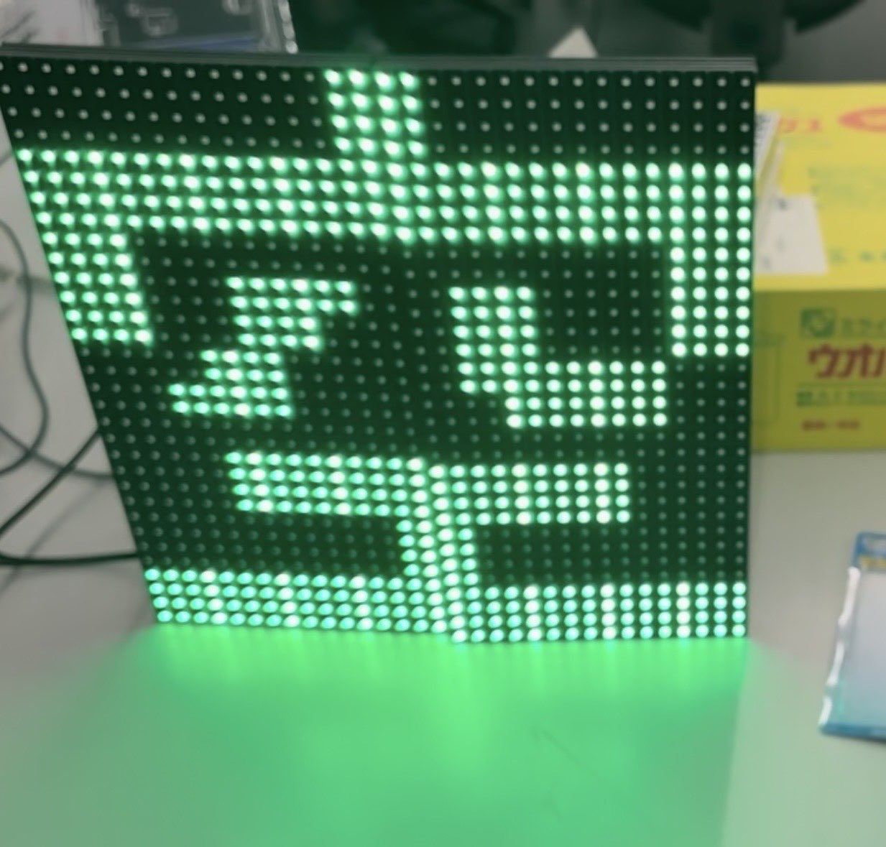
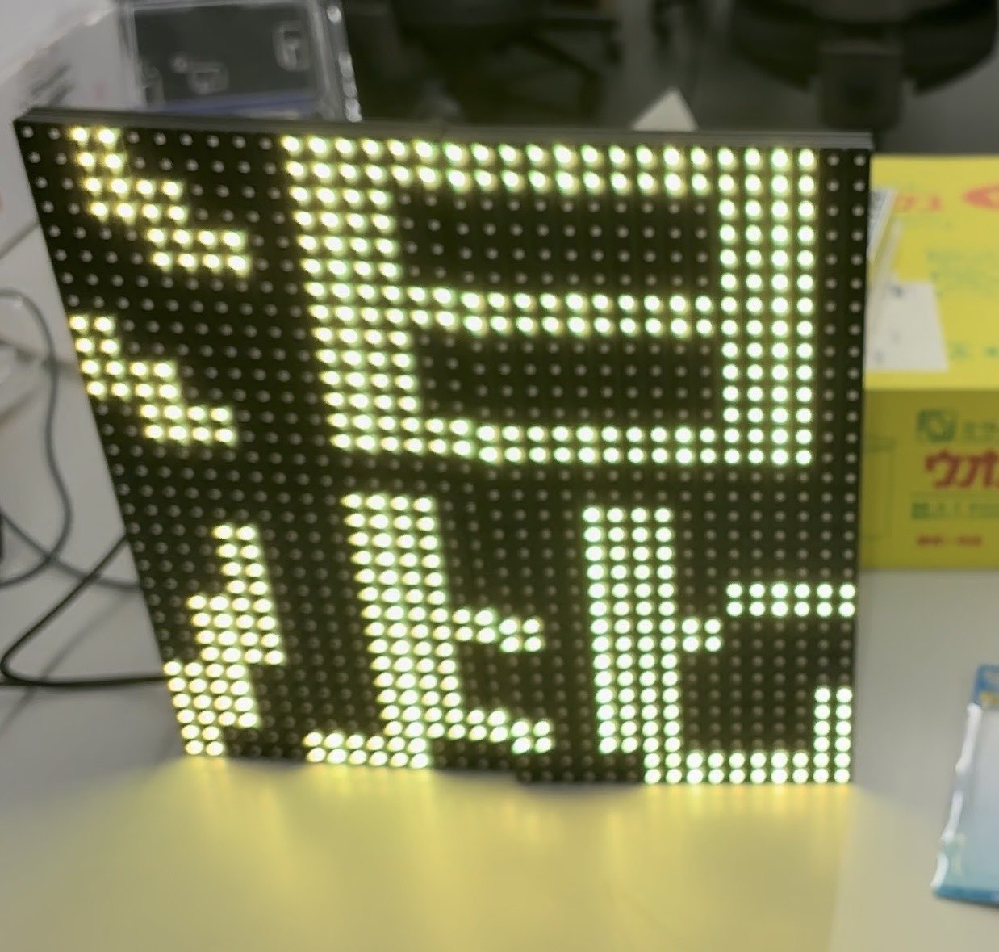
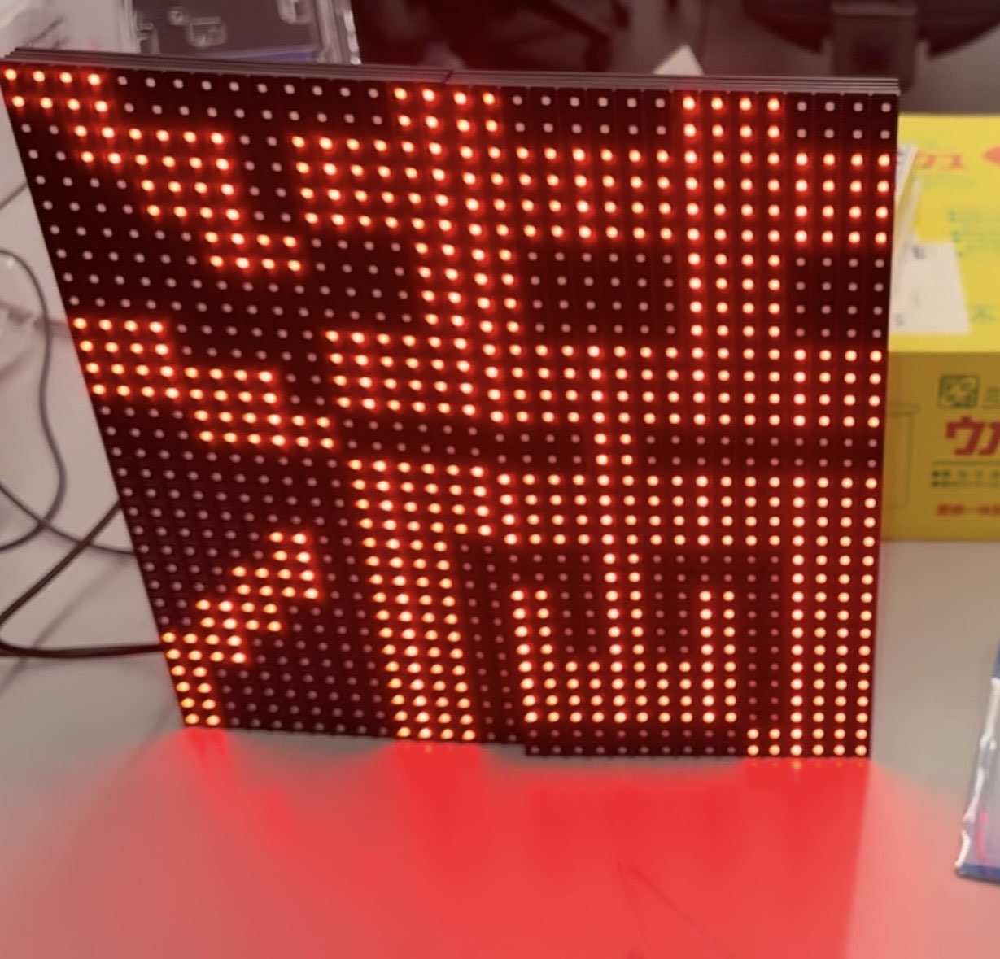
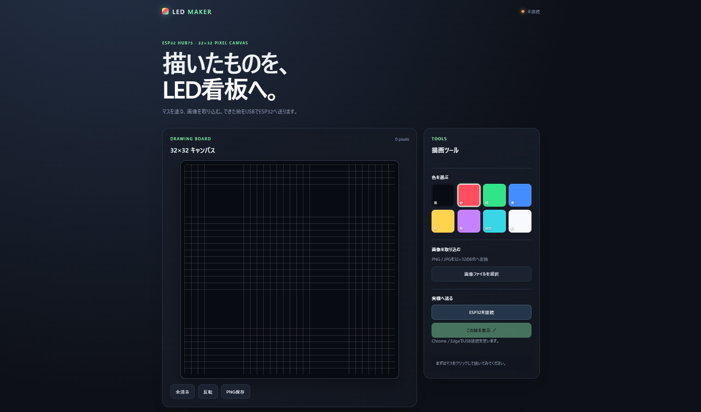
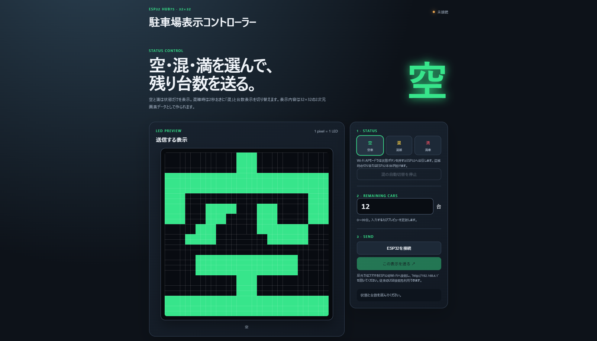
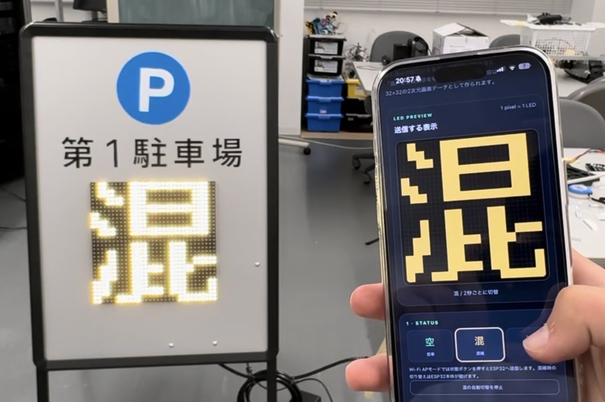

ESP32で光ったLEDパネルを，2枚の表示とWeb操作へつなげるまで
前回は，Arduino Unoで動かしていたLEDパネルをESP32へ載せ替えて，とりあえず実際に光らせるところまで進みました．
今回はその続きです．
配線の時点でパネルはすでに2枚つながっていましたが，最初は光らせるだけで精一杯でした．そこから表示の向きや位置を調整して，文字を出して，ブラウザから絵を送って，最後はESP32のWi-Fiにつないで操作できるようにしました．
「空」「混」「満」を表示する
飛ばしていますが，前回か前々回で文字を正しく表示するための調整はしてありました．
友達が駐車場の看板で使うために，「空」「混」「満」の表示を用意してくれました．



「混」はオレンジ色に見せたかったのですが，赤と緑を時間で切り替えるやり方だと，目を動かしたときに赤と緑が別々に見えることがありました．少しちらついて見える感じです．
そこで，この8色表示では無理にオレンジを作るのではなく，赤と緑を同時に点ける黄色に寄せました．オレンジっぽさよりも，看板の文字が落ち着いて読めることを優先しました．
表示を変えるたびに書き込むのは面倒だった
固定文字を出すだけなら，Arduinoのプログラムを書き換えてESP32へ書き込めばできます．しかし，表示する内容を変えるたびに書き込むのはかなり面倒です．
絵を出したいときも，
絵のプログラムを書き直す．
↓
Arduino IDEを開いてプログラムをコピペ
↓
ESP32に書き込み
↓
表示を確認なかなか面倒くさい．
そこで，Webブラウザで絵を作って，その画素データをESP32へ送る「LED Maker」を作りました．

最初のWeb版には，次の機能を入れました．
- 32×32のマス目へクリックやドラッグで描く
- 赤，緑，青，黄，紫，水色，白，黒の8色を選ぶ
- PNG，JPG，WebPの画像を読み込む
- 画像を32×32・8色へ変換する
- LEDっぽい見た目のプレビューで確認する
- 作った絵をPNGとして保存する
- 作った絵をESP32へ送る
この段階では，ブラウザとESP32はUSBでつないでいます．Web画面から操作しますが，通信にはWeb Serialを使いました．
PCのブラウザで絵を作る
↓ Web Serial / USB
ESP32が32×32の画素データを受け取る
↓ HUB75
LEDパネルへ表示するWeb画面は，アプリのフォルダーでnode serve.mjsを実行して，ChromeかEdgeでhttp://localhost:8000を開く構成にしました．
「ESP32を接続」を押してUSBシリアルの機器を選び，「この絵を表示」を押すと送信されます．
駐車場看板の表示画面を作る
駐車場で使いやすいように「空」「混」「満」を選ぶ専用画面を作りました．

「空」は緑，「混」は黄，「満」は赤です．
「混」は，混雑を示す文字と残り台数を2秒ごとに切り替えるようにしました．
表示の元データには，用意してあった空.txt，混.txt，満.txt，混2.txtを使いました．それぞれ32×32の色データを持っています．Web画面から配列を編集して，表示へ反映することもできます．
ただ，今はPC側でlocalhostしているためPCからしか操作できません．そこで，無線で切り替えできるようにしていきます．
USBからWi-Fi操作へ
USBでつないで操作できるようになったので，次は屋外看板として使うためにWi-Fiを繫げて操作できるようにします・
スマホから操作するなら，ESP32自身をWi-FiアクセスポイントとWebサーバーにすればよさそう．
操作の流れは次のようになります．
スマホの設定画面を開く
↓
Wi-Fi一覧から「LED-KANBAN」を選んで接続する
↓
スマホのブラウザを開く
↓
http://192.168.4.1 を開く
↓
表示を選んでESP32へ送る
↓
LEDパネルへ表示するスマホがESP32のLED-KANBANへ直接つながる構成です．
操作画面のHTML，JavaScript，CSS，文字のTXTデータは，ESP32のLittleFSへ入れました．そのため，プログラム本体を書き込むだけではなく，Web画面や表示データも別で書き込む必要がありました．
また，USB版ではブラウザ側で行っていた「混」と台数の2秒切り替えを，Wi-Fi版ではESP32側へ移しました．これならスマホの画面を閉じても，ESP32だけで表示を切り替え続けられます．
そして，スマホで操作できるようになりました．

まとめ
複数のパネルを一つの画面として扱うこと，駐車場の状態を選ぶこと，ESP32自身が操作画面を出すことへと，少しずつできることが増えていきました．
表示内容をプログラムへ固定していた段階から，外からデータを送って変更できる段階へ進めたので，看板として使うための形が少し見えてきました．
次回はP10を実際に看板に取りつけて，4枚光らせることを目標にします．
ばいちゃ！